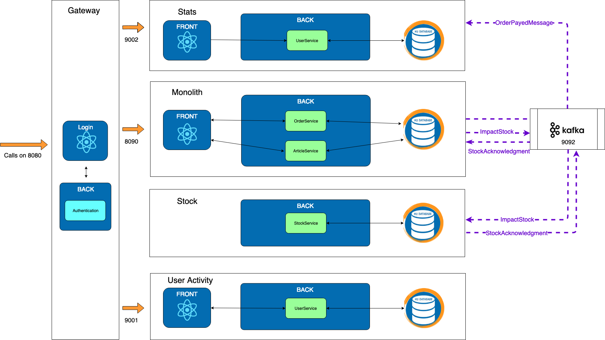

Exercise 5 : Stock
Previously on HOMicS -> Exercise 4: Stats with Kafka
Context
Often when splitting microservice, the question of transactions arises. Let's try to discover why through the extraction of the stock microservice.
About the stock micro-service
Stock modifications are often spread around a marketplace application. It could be modified from cart, refunds, or inventory. The stock microservice will store and update the stock for each article.
The existing
Before the migration when we pay an order, we were executing the following steps:
-
Open transaction
-
Check the stock
-
Impact the stock
-
Update the order status
-
Close the transaction
Extract it into a microservice
If we extract the stock service in a microservice like we did before, the steps become :
-
Open transaction
-
Ask the micro service to impact the stock
-
Wait for the response
-
Update the order status
-
Close the transaction
With this plan, you can see in step 3 that the monolith is waiting for the microservice response.
It's pretty bad!
Imagine that the call to impact stock times out...
Your payment method is going to wait the whole time and so is your user.
We need to change to asynchronous.
Going async
-
Open transaction
-
Ask the micro service to impact the stock
-
Close the transaction
Then, we listen to the microservice event.
-
The microservice call the monolith when the stock is impacted
-
Open transaction
-
Update the order status
-
Close the transaction
What happens if the result of the microservice is "not enough stock" ?
We save the order as cancelled.
Goal
Extract the stock micro service using kafka.
The workflow becomes:
-
An ImpactStockMessage is send to kafka
-
The stock micro-service verifies and then impacts the article stock
-
A StockAcknowledgmentMessage is send with a status succeed or not
-
The monolith consumes the message and change the order status accordingly

At your keyboard
Checkout the branch:
git checkout exercise-5
This exercise is split in three parts.
-
You will edit the Monolith to remove the stock and send a message when paying the order to decrease the stock.
-
You will consume the messages in the Stock microservice to decrease the stock and answer with a new message for acknowledgement.
-
Go back to the Monolith and consume the answer from Stock and perform the stats if success.
5.1 - Monolith
-
Remove the stock column in the Article entity.
-
Remove the stock validation and call the StockService.
-
Implement the method to send a kafka message to the Stock microservice
5.2 - Stock
-
Consume the message and call the stock service.
-
Verify that the operation wasn't already process to keep an idempotent process.
-
Notify by calling the right method to acknowledge the changes on stock.
-
Notify by sending a message to kafka that stock could NOT be modified.
-
Save the operation as processed so it won't be process several times.
-
Notify by sending a message to kafka that stock was modified successfully.
5.3 - Monolith
-
Depending on the message sent by Stock for acknowledgement, set the status for the order (PAYED or CANCEL)
-
In case of success, update the stats and notify the stats microservice.
List of TODOs
5.1.1 - file com.homics.monolith.model.Article
5.1.2 - file com.homics.monolith.service.OrderService
5.1.3 - file com.homics.monolith.service.StockService
5.2.1 - file com.homics.stock.service.ImpactStockConsumer
5.2.(2/3/4/5) - file com.homics.stock.service.StockService
5.2.6 - file com.homics.stock.service.StockAcknowledgmentProducer
5.3.(1/2) - file com.homics.monolith.service.OrderService
Good to know
When working with kafka, we can set the configuration to have either:
-
All messages received but with possible duplicates.
-
No duplicate but you can miss some messages.
We are working with the first choice. It constrains us to have idempotent messages.
Idempotent means that an action always gives the same result even if you played several times.
In our case, the same message can be read multiple times and will give the same result. For example, in the stats microservice, the second message only updates the data since the orderId is unique.
It explains why we keep the table StockOperation.
Congratulations
You finish this HandsOn in time. We want to thank you for coming and hopefully, you learnt a lot and are happy with the content of this HandsOn.
What's next ?
Come see us at our stand and let us know what you though about the Hands On.
Please your feedback means a lot to us. If you have 5 mins to spare, could you fill this survey
Thank you.